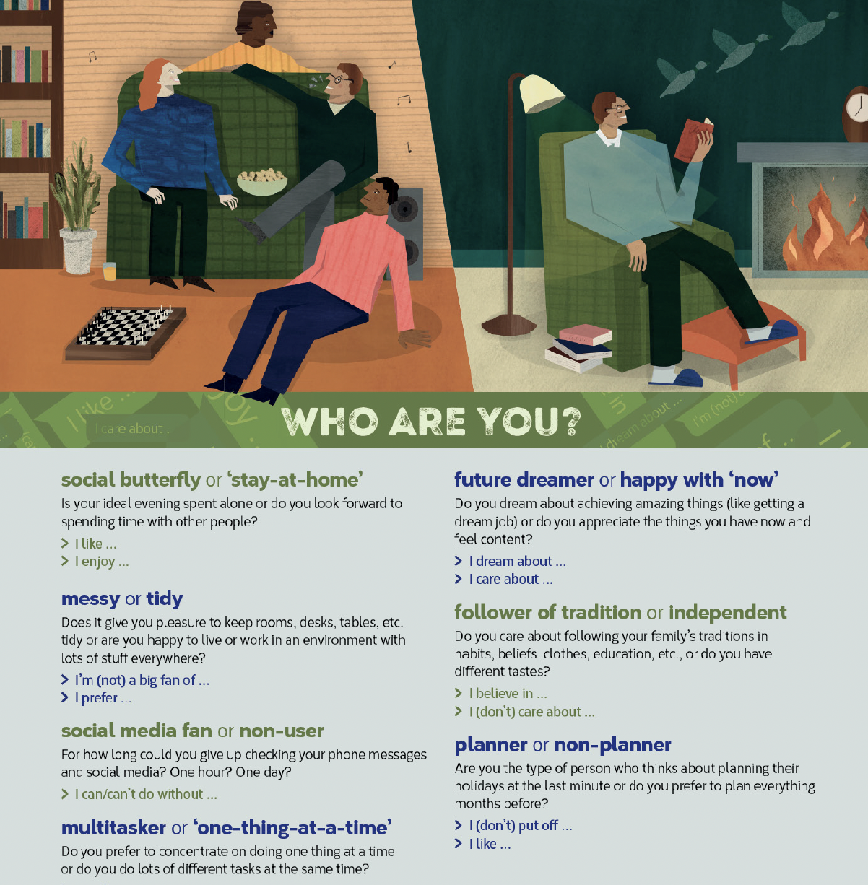

Phrasal verbs: housework · How to leave phone messages · Speaking
Zuleya says that, for creative people, the homes she designs are 1pleasure / ideal. She thinks minimalism allows us to 2stand / appreciate the important things in life. She believes we can 3do without / give pleasure so many things.
Richard is doing his 4dream / first job. Minimalism isn't 5for him / the taste because he 6dreams of / is not a big fan of blank, empty spaces. He says his objects give 7taste / pleasure to his visitors. He also says people have different 8hopes / tastes and you can live a simple life and still enjoy colours and patterns in your home.

To show a strong attitude towards a topic, we often use emphatic language, e.g. 'I definitely …', 'I definitely don't …'. Can you think of any other emphatic phrases?
Before you do the activity in Ex 7C, look at the questions and think about which emphatic phrases you can use in your answers to show your attitude.
Strong positive:
Strong negative:
a someone moving house b someone organising a party c someone going away for the winter
What do you do when:
a lock it up
b throw it out
c tidy it up
d hang them up
e pick some up
f go over them
g take it out
h turn it up
B: What do you do when your clothes are lying all over the floor?
A: Hang them up.
B: Correct!
1 You've Café Roma.
2 Please leave a message and we'll get to you.
3 Thank you for Smiths and Co. Our office hours are 8 a.m. to 6 p.m.
4 I can't take your call right now, but if you leave a with your name and number, I'll get back to you as soon as I can.
5 is Marcelo Fagundes calling about …
6 It's Patricia …
7 need to unlock the …
8 You'll it on the table next to the …
9 Can you me back?
10 You can reach me on this .
We can make a direct request by using Can you/Could you … ? or Will you/Would you … , please?
Can/Could you call me back?
Will/Would you (look for it/pick some up), please?
We can soften a request to make it sound less direct by using phrases like:
Do you think you could/you'll be able to … ?
I wonder if you could/would …
I wonder if you'd mind … + -ing
Do you think you could have a look at it for me?
I wonder if you'd help me set the alarm.
I wonder if you'd mind helping me lock up.
Notice: with indirect requests, the word order is the same as for affirmative statements.
Do you think you could NOT Do you think could you
We use particular phrases when speaking on the phone or leaving a phone message.
It's Max speaking. / It's Max here. / This is Max speaking/calling about … NOT I'm Max.
You've reached (Riccardo's) mobile.
Please leave a message and we'll get back to you.
Thank you for calling (Dr Singh's office). Our (office) hours are (8 a.m. to 6 p.m.).
I can't take your call right now, but if you leave a message with your name and number, I'll get back to you as soon as I can.
It's (John) here.
This is (Marcelo Fagundes). I'm calling about …
I'm calling to (ask for/request) …
I was ringing to (see if/find out if) …
Can you/Could you (call me back/check) … ?
Will you/Would you (look for it/explain …), please?
Do you think you could (have a look at it for me)?
I wonder if you would mind (having a look/helping me) … ?
You'll need to (open the … /speak to …).
It's the (one) that's (sitting on the desk).
You'll find it (on the table next to the …).
The event starts at … , (so you have to be there at …).
Can you call me back?
You can reach me on (this number/0775867435).
1 Hi you've reached Miguel's number. I can't take your call right now, but
2 Thank you for calling ElectroStars Ltd. Our hours
3 Hi, it's Ivan here.
4 Hi, this is Pete Sciberras. I'm calling about
5 Can you call
6 You can
a me back on this number?
b I'm calling about tomorrow night.
c are 9 a.m. to 5 p.m. Monday to Friday.
d reach me on 0886537564. Thanks.
e please leave a message and I'll get back to you.
f my appointment on Monday.
A: Hello. You have 1 Denbells Alarm Systems. Please leave a 2.
B: Hello, 3 is Monika Ingham 4. I'm calling 5 ask for your help. My alarm system is faulty and the alarm keeps going off. Do you 6 you could send somebody round to look at it for me? 7 you call me back on 03544 82212? Thanks.
A: Hi this is Sally. I'm sorry I can't 8 your call right now, but please leave a message and I'll 9 back to you as soon as I can.
B: Hi Sally, 10 Gabriel here. I was 11 to see if you could do me a favour. I left my bicycle downstairs and I think I forgot to lock it. I 12 if you could go and check it for me? 13 find the lock in the kitchen, near the door. 14 you let me know when you get this message?
Before leaving a phone message in English, it helps to plan and write down the main points. Think about how to:
B: You've reached [name]. Please leave a message.
A: …
1 You're in class. Forgot take food out of freezer. Ask: go home, take food out (give details: which food, how much, where to leave it).SPEAKING OUTPUT | a work-based discussion · GOAL | agree on the best way to fix a work problem · MEDIATION SKILL | inviting contributions
1. Discuss the questions.
2. Read the Scenario and listen to the messages. Why does Janel want to talk about the automated message system?
SCENARIO
Janel sends you this message:
Hi everyone.
I looked at our feedback yesterday and everybody hates our automated messages on the customer service system! It has a rating of two stars out of five and people say it's really unfriendly and annoying. Can you listen to it and have a look at the script (see below) and think about how we can change it? Then we can talk about it in next week's meeting.
Thanks!
Janel
Automated message
You've got through to Well Gym. Press 1 to book a personal trainer. Press 2 to book the pool. Press 3 to speak to someone.
[If no one is free to help the customer when they choose an option:]
We're really busy right now. Continue to wait or maybe call back later. While you're waiting, why don't you leave us a five-star review online?
[Music plays: heavy rock]
[Repeat message every 15 seconds.]
4. Read the Mediation Skill box. Which phrases did Janel use? Listen again and check.
Mediation Skill
inviting contributions
When you are trying to solve a problem in a group, it is good to organise the conversation so that everyone has a chance to share their ideas. Here are a few ways you can do this.
Say how the conversation will be organised
Can we share one idea each about how we can change this?
Let's talk about the music first, then we can talk about the messages.
Ask the whole group
OK, what does everyone think?
How do we feel about these ideas?
Ask individuals
Lesley, what are your thoughts on it?
Rich, how do you feel about Lesley's idea?
Ask people to build on other people's opinions
Rich hates the music – what are your thoughts on it, Lesley?
I think the guy's voice is a bit boring. What does everyone else think?
Janel: So, we've got two possible plans to fix the problem. 1 ?
Lesley: I think plan A is better, it's cheaper and easier to do.
Janel: 2 .
Rich: I think Lesley's right, it is easier.
Janel: OK, so Les and Rich think plan A is better. 3 ? Tom? Chris?
7. Discuss the issue from the Scenario and decide how you will improve the system.